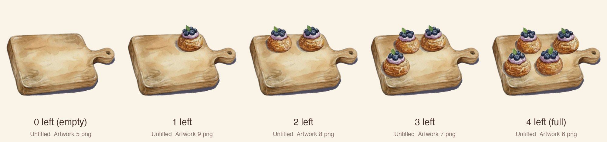
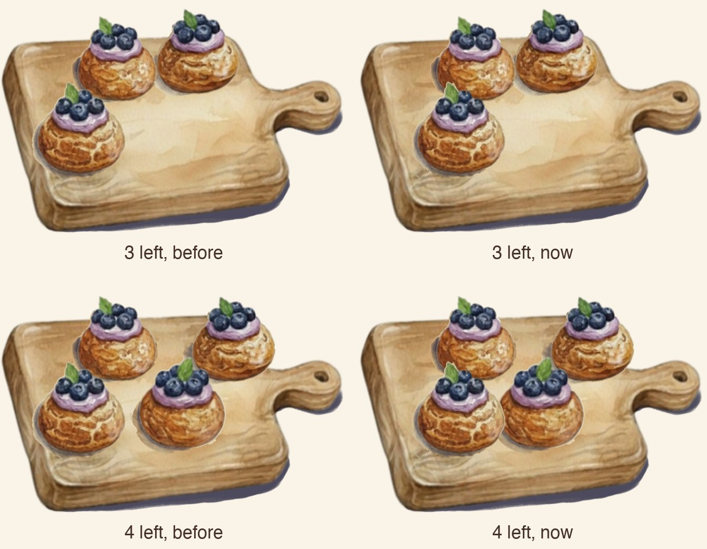
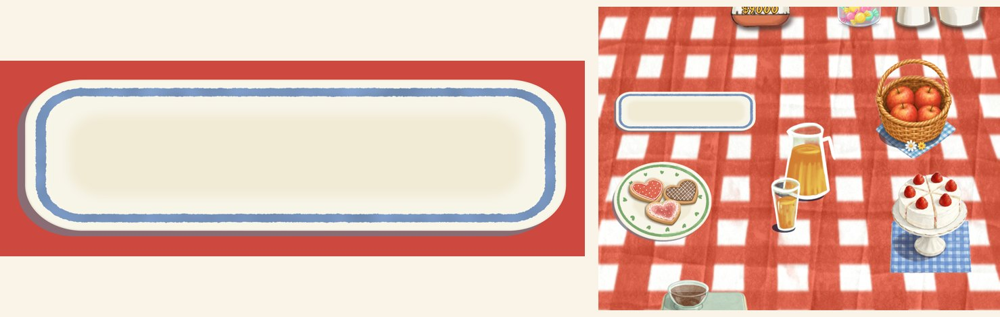
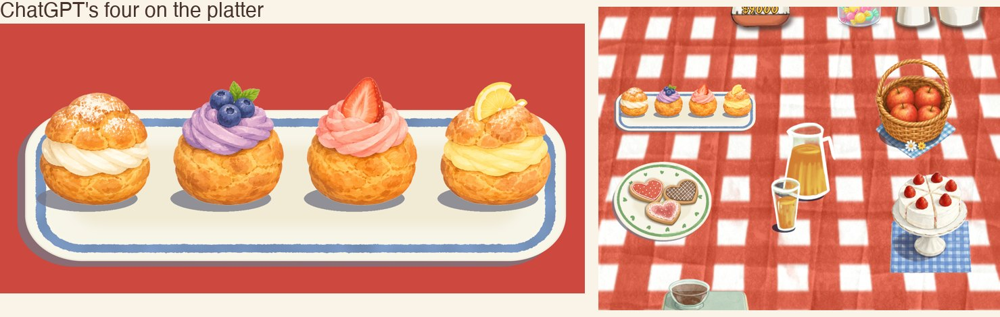
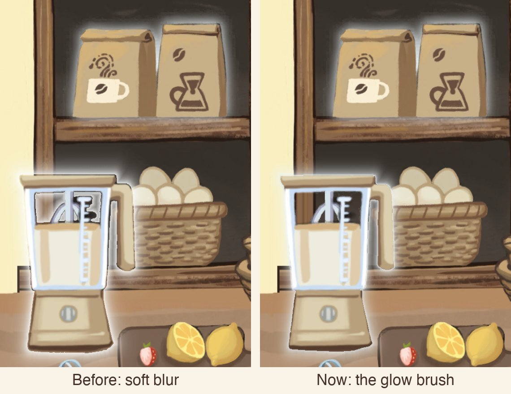
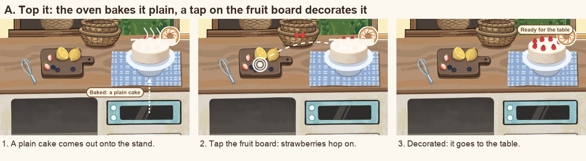
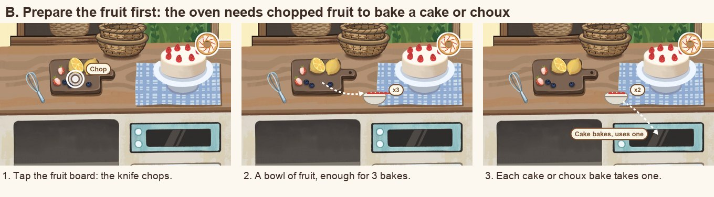
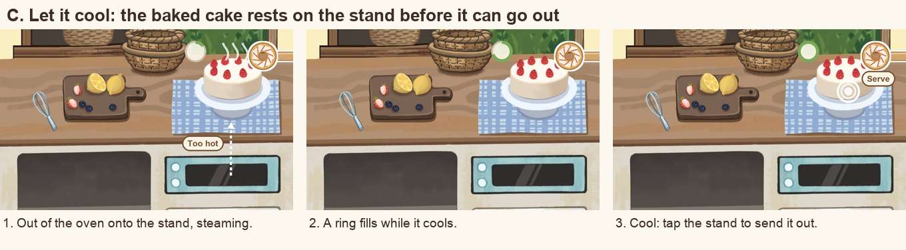
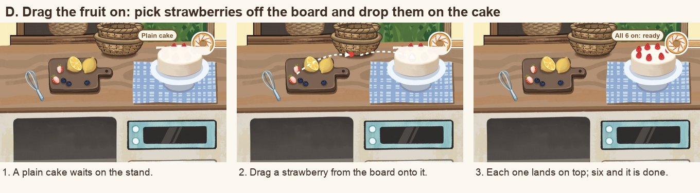
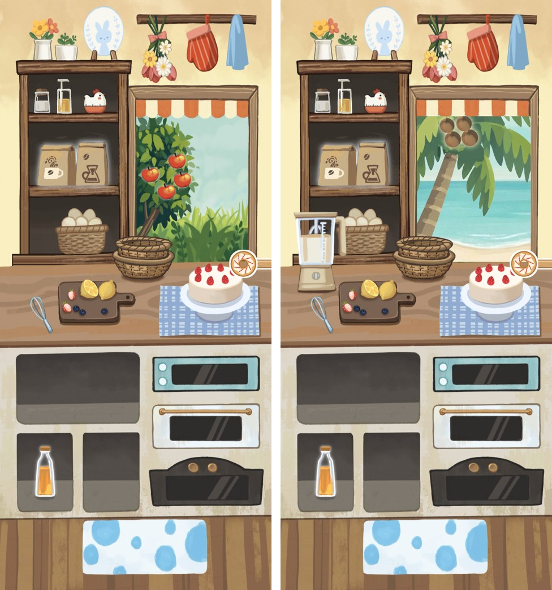

Food Truck Cafe
Your report for 15 November. 26.11.22 (build 35) and the 15 Stars purchase are waiting for Apple's review; they go on sale by themselves once approved.
1Next
You
App Store page (Q&A): what we can improve, tick what to do.
Kitchen (Current): the glow brush on the blender, and four ideas for the cake and choux step.
Choux (Current): your platter and ChatGPT's four new choux.
Choux frames (Q&A): the third choux is fixed; the full frame still moves the choux.
Say "build" when you want a test build with these. None before your word.
Me
Players since 26.11.21 (Analysis): day 1 is fixed; day 2 and the kitchen tutorial are where people stop.
26.11.22 and the 15 Stars are waiting for Apple's review; they go on sale by themselves.
ChatGPT's night beach is in the game (your tick), in no build. The kitchen board and stand stay as they are.
2Q&A
You asked: show me all the frames of choux (15 November)
The choux board on the table has 5 frames, one per choux left. The kitchen ovens are shared, so choux has no frames of its own there.

- Frames 1 to 3 add one choux at a time in the same spots.
- The full frame (4) puts all four in new places. So when a player takes the first choux from a full board, the other three jump.
Fixed: the third choux sat on the board's raised left rim. It is moved 80 pixels in, onto the flat top, in both frames that have it (3 and 4). Its own pixels; the spot it left shows the empty board's own wood, and the choux behind it is whole again (its bottom was under the leaf; taken from frame 2, where it is the same choux). In the game, in no build.

In frame 4 it now touches the front-right choux.
You asked: what can we do on the App Store page itself, without marketing, so the game is found and downloaded more? (15 November)
How Apple ranks search: text that matches the name, subtitle, keywords and category, and how people react: downloads, ratings and reviews. The description and promotional text do not count for search; they only help someone who opened the page decide.
Where we stand today: name "Food Truck Cafe"; subtitle "Bake, serve & grow your cafe"; 99 of 100 keyword letters used; category Simulation and Casual; English only; 0 written reviews, and the game never asks for a rating; no in-app events; no custom pages; no iPhone Duo pictures.
What I suggest, most useful first:
- Ask happy players for a rating. Apple's own rating popup, shown at a good moment (after a 3-star day), at most 3 times a year as Apple allows. Ratings help the ranking and the page. A small code change; the biggest win for us.
- Better keywords and subtitle. Apple: no word twice across name, subtitle and keywords; no plurals; no "game" or "app". Ours repeat nothing, but miss what the game now has: ice cream, waffles, the beach, coffee, barista. For example:
- Subtitle "Cozy bakery & cooking tycoon" (28 letters).
- Keywords restaurant,kitchen,chef,coffee,barista,ice cream,dessert,cake,pastry,diner,cute,sweet,waffle,beach (98).
- An in-app event for the winter chapter in mid-December. Events show on the product page, in search and on the Today tab, and they are free. It is the only "news" slot Apple gives that needs no ads.
- Update the description and promotional text. They don't affect search, but they are what people read. The description still says "serve two customers at a time" and never mentions the beach, ice cream, chapters, the star shop or the yoga lady. The first sentence matters most. The promotional text (170 letters) can be changed at any time without a review; good for "New: ..." lines.
- iPhone Duo pictures. Apple's iPhone Duo is on sale since 23 October. Duo pictures give the page a "made for iPhone Duo" badge, and from April 2027 every update must include them. They need captures at the Duo's sizes; a full Duo-ready build needs Xcode 27.1 (we have 26.3), and I still need to check that our Unity version supports it.
- A custom product page for ice cream, tied to keywords such as "ice cream" and showing the beach pictures first. Apple now lets such pages show for their keywords in search.
- Extra English store languages (UK, Australia) give more keyword fields. This is common practice among app makers; Apple does not document how much it helps.
- Later, with more visitors: Apple's A/B test of icon and pictures. With today's few visits a test would take many weeks.
Sources: Apple: App Store search, Apple: Creating your product page, Apple: iPhone Duo, Apple: Custom product pages.
You asked: does the shop panel scroll by dragging, or only with the arrow buttons?
- Both. A finger drag scrolls the cards up and down; the arrow buttons do the same in steps.
You asked: how do we keep the winter chapter hidden while regular releases go on?
- A switch per chapter, off in store builds. The game already counts its chapters (2 now); chapter 3 is built but the count stays 2 until the release that ships it. The secret chapter gets its own switch.
- Test builds can open it, with a "Chapter 3 test" button like the "Chapter 2 test" one. App Store copies never have that button.
- Built in small steps on the main line, each checked with the switch off (the store game unchanged) and on.
- Your plan is written down (winter chapter 3 for mid-December; the star-unlocked Day of the Dead chapter; both built by the end of the year), so any later session starts from it.
3Current
Choux redraw: your platter (B) and four new choux by ChatGPT, 16 November. Not in the game.

- Painted the way your cookie plate is: the same cream, no outline, a solid band with a slightly rough crayon edge (blue instead of green, same strength), a softly sunk centre, and the same hard grey-blue shadow, lower left. Sizes match the cookie plate on screen.

- ChatGPT drew them fresh from our table art (cookie plate, cake, baskets, coffee machine) and the platter. The old choux were not shown to it.
- Each has a small hard shadow on the platter, like the plate's.
- They are smaller than today's choux, since four now share the space. Bigger choux would need a longer platter or choux that touch.
- The next ChatGPT picture can be made after 4:56 PM today (free plan).
Kitchen: a glow brush copied from the coffee bags and the tree's apples, 15 November. The blender's glow repainted with it; in the game, in no build.

- What the bags' and apples' glow is: brightest right at the object's edge and the same width all round it, like a soft white brush run along the outline. Cool white, the same in both.
- Mine was the opposite: nearly nothing at the edge, brightest a few pixels out, then a long fade. That reads as a blur.
- Its width follows the object's size: the bags' band is 30 pixels, an apple's 14. The brush works it out for each object.
- The brush (Docs/tools/glow_brush.py) paints this glow around any picture, as its own layer or baked into the picture. Re-painting the bags and apples with it gives back their own glow.
Kitchen: an extra step for the strawberry cake and the choux, four ideas, 15 November. Sketches on the real kitchen; nothing built.




- The choux work the same way in each idea, on the fruit board instead of the stand: the puffs come out plain and get blueberries and cream (A, D), or need chopped fruit to bake (B), or cool on the board (C).
- A: top it. One tap, and both items get a job. Easy to learn.
- B: prepare first. A planning step, like the coffee beans. The tap can be done ahead, in a quiet moment.
- C: let it cool. A wait, then a tap. It slows the cake down; no new skill.
- D: drag the fruit. The most hands-on and cute, but six drags per cake is slow when it is busy.
- My pick: A, maybe with B's bowl later if it feels too easy.
The kitchen with everything bought, 15 November. Every food, all three ovens, the coffee machine and ice cream at their top level.

- The pull handle sits on the cake at its starting height; it can be dragged up or down.
Roll cake: the two pictures we keep, 15 November. Not for a release yet; no game code.

4MVP
For the release after 26.11.22. Nothing here is in a build.
The three things for this release (your pick, 15 November):
- Redraw the choux. Your platter (B) is painted; ChatGPT drew four flavours (original, blueberry, strawberry, lemon).
- Redesign the kitchen flow. The four ideas for an extra cake and choux step (Current) are a start; I will draw up the whole flow next.
- Improve the App Store page. Your ticks on the Q&A list choose which parts.
Approved by you:
- Yoga lady a quarter bigger; sparkles with a soft flash when she finishes a pose (B5).
- Cookie plate: its box fits the plate.
- Handle: red over an item while arranging.
- Shop: taller picture tabs (star, coin, banknote); the star picture in the star cards' texts.
- Chapter 2 beach: ChatGPT's repaint, day and night.
- Choux: the third choux off the board's rim (until the redraw replaces it).
5Backlog
Nothing open.
6Analysis
Players, 14 to 16 November (Unity, store copies only, read 16 Nov 17:20 UTC). Left out: your phone (ec14c6) and Apple's three review runs (bd52f3 for 26.11.21; 9840a9 and 86d5a9 for 26.11.22, which is still waiting for review).
New players: 26. 14 on 26.11.13 (14 and 15 Nov), 11 on 26.11.21 since it went on sale on 15 Nov, 1 on the old 26.10.26. Mostly the Philippines (18); also the US, China, France, Hong Kong, Indonesia, Malaysia, Vietnam.
| How far they got | 26.11.13 (14) | 26.11.21 (11) |
|---|---|---|
| Opened, nothing after | 8 | 1 |
| Left during the tutorial | 1 | 3 |
| Finished the tutorial | 5 | 7 |
| Finished day 1 | 2 | 6 |
| Finished day 2 | 1 | 2 |
- The data fix works. On 26.11.13, 8 of 14 seemed to open and leave. On 26.11.21 only 1 of 11 did. Most of the earlier "leavers" were the lost last minute, not real quits.
- Day 1 is no longer a wall. On 26.11.21, everyone who started day 1 finished it, all with 3 stars. One player (Indonesia) left mid-day and came back 5 hours later to finish it.
- The new wall is day 2. Nobody went past day 2. The two who finished it played 2 days in about 5 minutes and stopped. A day takes about 55 seconds.
- Two of the three tutorial leavers left in the kitchen part. One sat on "Tap the oven to bake more bread" for 1 min 45 s, then closed the game. One rushed steps 1 to 11 in 22 seconds and stopped after "Beans are full again". The third left at step 5, 25 seconds after opening. This fits the kitchen-flow redesign.
- Shop and ads (26.11.21): 3 coin buys (Juice, Yoga lady, Grandma). 3 between-day ads: 2 watched to the end, 1 skipped (before, every one was skipped). 1 bonus ad watched. Remove Ads and 15 Stars sales show in App Store Connect, not here.
- Seven players' games paused for a few seconds right after the first open. That is iOS's first-launch prompt, not a quit.